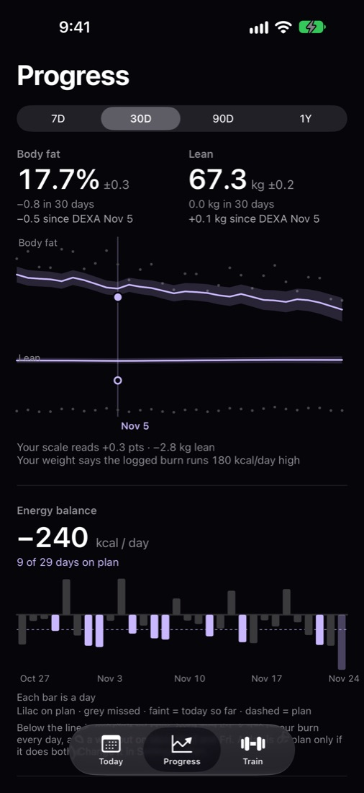
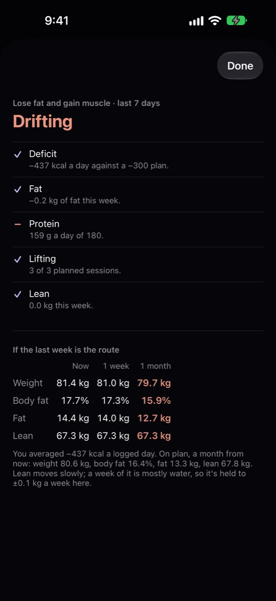

Eat
Take a photo of what you eat, or just say it. That's the logging done.
See the day
What you ate against what you burned, so you know where today stands.
See what changes
Fat and muscle, not just weight. Your DEXA scans keep it honest.
Train
Log a session in a few taps and see how you've trained beside what changed.
Your colour.
Phase is lilac until you make it yours. Pick any colour and the whole app follows: the moon, the charts, the widgets on your Lock Screen. Try it here.
Intention.
MaintainLose fatGain muscle
Pick what you're after. Phase checks your last seven days against it. When you drift, it tells you, and shows where that road goes in a week and a month.
